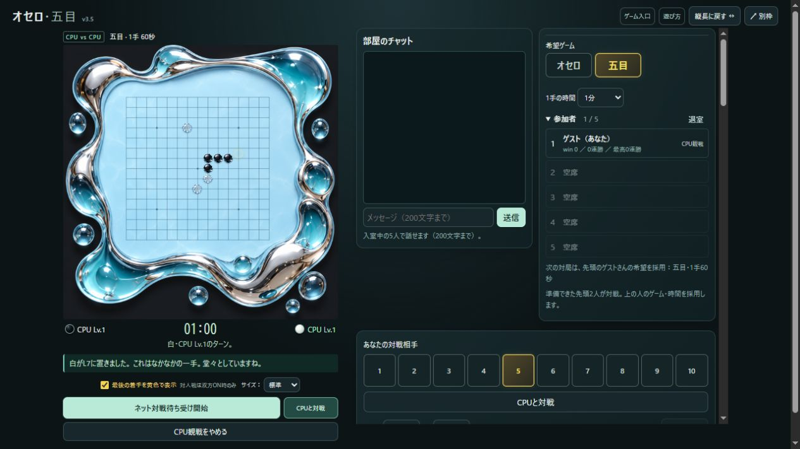
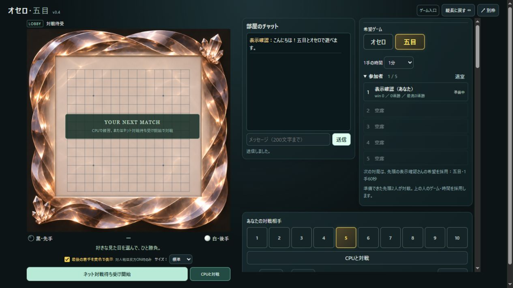
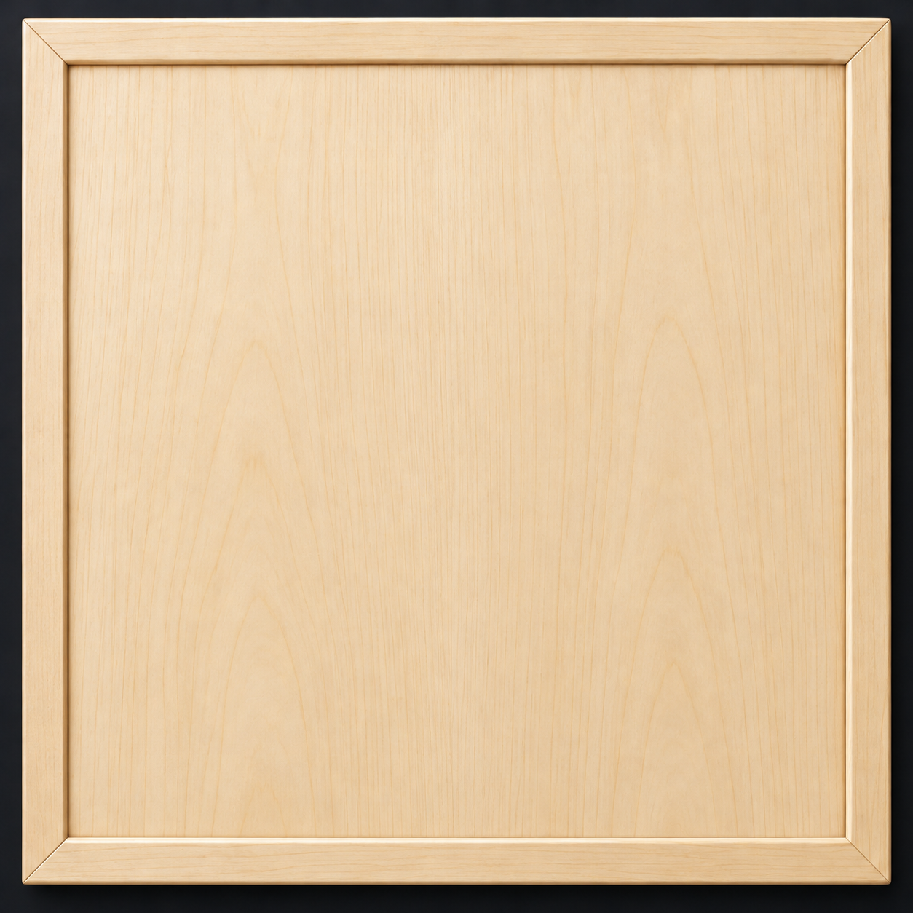
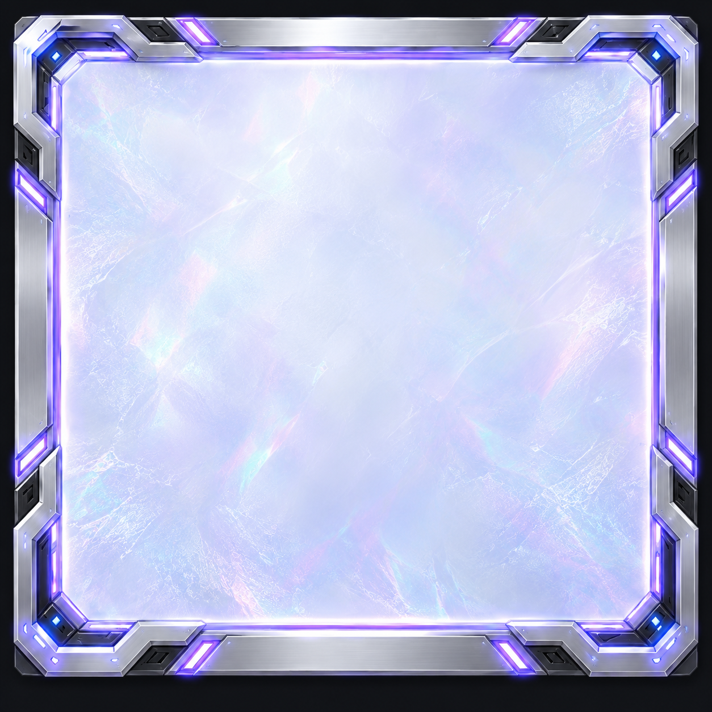
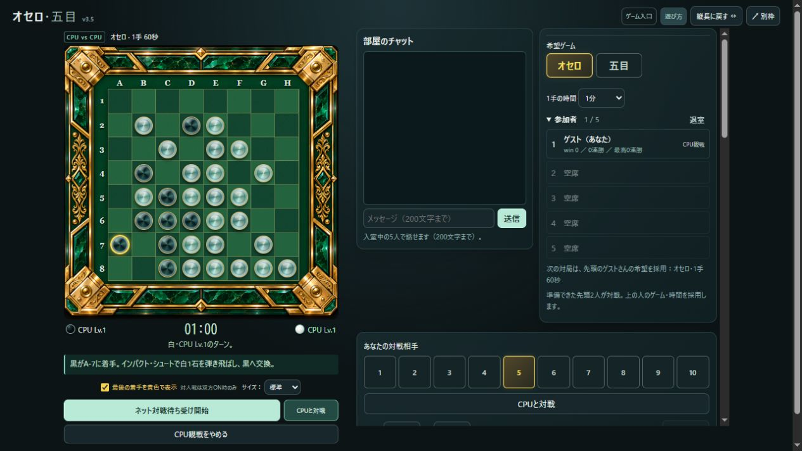

勝ったら、次の挑戦を待とう。
勝者は待受ONを継続します。結果から約14秒で待受へ戻り、相手がいれば次戦へ。敗者と引き分けた人は、また遊びたいときに待受を始めてください。待受を取り消すこともできます。
YOUR TABLE, YOUR STYLE
友だちと話す。CPUで肩ならしをする。
お気に入りの盤と音で、次の一局を待とう。
このページは盤のルールではなく、部屋の使い方をご案内します。
ゲームから開いた場合、元のタブで待受や対局は続いています。

01 / MEET & PLAY
オセロも五目も同じ部屋。対局する2人と、見守る人を合わせて最大5人で遊べます。

名前は7文字まで。「ランダム」でも選べます。空欄なら「名無しさん1」など、ほかの人と重ならない名前になります。満杯のときは空席を待ってください。
「オセロ」「五目」と持ち時間を選びます。次に対戦する待受ONの2人のうち、順番が先の人の希望が採用されます。希望が違っても同じ部屋で対戦できます。
押すとボタンが「ネット対戦準備を取り消す」に変わり、待受ONです。対戦できる2人がそろい、順番が来たら自動で開始。黒・白の決定演出のあと、自分の番は黄色の太字で分かります。
勝者は待受ONを継続します。結果から約14秒で待受へ戻り、相手がいれば次戦へ。敗者と引き分けた人は、また遊びたいときに待受を始めてください。待受を取り消すこともできます。
参加者の横にネット対戦のwin・現在の連勝・最高連勝を表示。CPU戦の勝利は加算しません。退出すると記録はリセットされます。2人だけなら、結果表示中に双方が「再戦をする」を押して再戦もできます。
02 / WARM UP & WATCH
練習する。見守る。そのまま流して眺める。部屋での過ごし方も自由です。
希望ゲームを選び、「あなたの対戦相手」の数字で難易度を決めて「CPUと対戦」。盤面下の同じボタンからも始められます。黒・白は開始時に決定します。「待った」はCPU戦で利用でき、オセロCPU戦では置ける場所の「・」もONにできます。
終了後は「再戦をする」、途中なら「CPU戦をやめる」で待受へ。負けを認めるときの「降参する」には、石が飛び散る演出もあります。
「観戦」の左右の難易度を別々に選び、「CPU同士」を押すと対戦を眺められます。結果から「次の試合を見る」で次戦へ進めます。オセロと五目、どちらでも観戦できます。
ネット対戦の観戦中やCPU観戦中にも、次の希望ゲームを選び、CPU戦を始めて待つことができます。現在見ている対局のゲームは変わりません。

CPU同士の結果で押すと次戦へ。以後は試合終了から6秒後に自動で次の試合が始まります。同じ難易度の組合せを引き継ぎ、ランダム背景なら毎試合違う盤へ切り替わります。
結果の「連続観戦中・あと○秒（停止）」で自動進行だけをOFFに。「連続観戦をやめる」なら待受へ戻れます。
03 / MAKE IT YOURS
勝負の仕組みは同じでも、見える世界はがらりと変わります。






入室後、対局前・対局後に設定できます。選んだゲームに合わせて設定内容が切り替わります。五目は92種類のスキンと、それぞれの世界に合う駒。木や大理石から、透明なガラス・宝石のような景色まで選べます。
オセロは20種類の背景、駒のスタイル、石の変化演出を選択。「演出一覧・使う演出」で、好みでない演出をOFFにすることもできます。着手欄には選ばれた演出名が出ます。
「？」のランダムを選ぶと、再戦や次の試合で直前と違う背景へ。固定で選べば、お気に入りの盤を使い続けられます。待受で「五目」を押し直して、ランダム背景を見てみることもできます。
見た目・音は自分の画面だけの設定。相手のスキンや音を変えることはありません。背景スキンは保存しません。入室中は選んだスキンで遊べますが、退出後や次に開いたときはオセロ・五目とも「？」のランダムへ戻ります。音や駒のスタイルなど、それ以外の設定は同じブラウザに保存し、「初期設定に戻す」で戻せます。対局中は見た目・音の変更をお休みします。

SOUND SELECTION
五目には63種類の録音・効果音と13カテゴリー。碁石の音、ビー玉、ガラス、木、金属、かわいいデジタルなどを「▶ 試聴」で聴き比べられます。
04 / STAY TOGETHER

別枠は縦長のスマート表示で開きます。「広げる ↔」で横長に、「縦長に戻す ↔」で元の形へ。元のページと別枠で二重に操作せず、操作する画面を引き継ぐ仕組みです。同じ入室のまま別枠へ移るときは、選んでいる背景も引き継ぎます。
盤面の「サイズ」で、スマート・標準・拡大・激拡大・爆拡大を選べます。大きい表示は縦スクロールも使い、ゆったり楽しみたいときに。スマートでは会話欄の場所も確保します。
対戦中もCPU戦中も、入室している人なら同じチャットで話せます。200文字まで、Enterか「送信」で投稿。過去の会話を読んでいるときは勝手に下へ移動せず、「新着○件 ↓」で最新へ戻れます。
チャットは最新60件。全員の退出やサーバー再起動で消えます。ほかの人の対局を眺めるだけでも歓迎です。
GOOD TO KNOW
次の対戦者2人のうち、待ち順が先の人の希望ゲーム・時間を採用します。勝者はそれまでの位置に残るので、その人の希望になることもあります。あなたの希望は次の機会のために保持されます。
待受がONになっています。順番が来たらCPU戦やCPU観戦からネット対戦へ移ります。CPU戦に集中したいときは「ネット対戦準備を取り消す」を押してOFFにしてください。
「最後の着手を黄色で表示」をONにします。ネット対戦では、対戦する2人ともONのときだけ、参加者・観戦者に表示します。どちらかがOFFなら双方に出ません。CPU戦・CPU観戦では自分の設定を使います。
右下の「盤面を確認」で文字を隠せます。ほかの場所をクリックすると結果表示へ戻ります。最後にどこで決まったか、ゆっくり確認できます。
選ばれた1手の時間を過ぎると時間切れ負けです。オンライン対戦中の切断・退出も負けになります。CPU戦をやめることと、ネット対戦から退出することは別です。
背景スキンだけは保存せず、退出後や次に開いたときはランダムへ戻ります。音・駒のスタイルなど、それ以外の個人設定は同じブラウザに保存します。win・連勝記録は入室している間だけの記録で、退出すると消えます。別のブラウザや別の端末へは引き継ぎません。